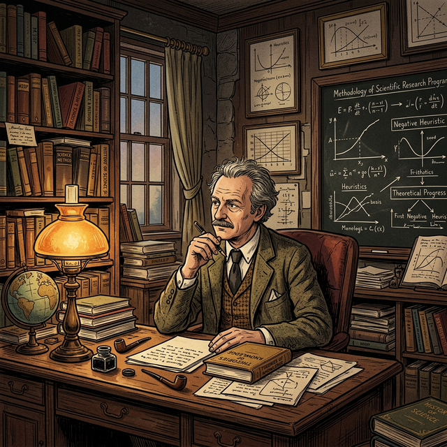

Después de Kuhn: ¿La ciencia es irracional?
La publicación de La Estructura de las Revoluciones Científicas por Thomas Kuhn produjo pánico en la filosofía de la ciencia. Si la adopción de un nuevo paradigma no obedecía a la lógica estricta sino a dinámicas sociales, persuasión o conversiones casi religiosas, ¿qué separaba entonces a la ciencia de la ideología o el dogma?
Ante la amenaza del relativismo sugerido por la "inconmensurabilidad", se desató una búsqueda frenética para restaurar un criterio de demarcación más realista que el viejo falsacionismo de Popper, pero que pudiera evitar caer en la conclusión de que en la ciencia no existe un progreso racional objetivo.
Popper había argumentado que la ciencia procede por la refutación constante (falsacionismo). Kuhn había replicado remarcando que en la "ciencia normal", la comunidad protege su paradigma frente a las refutaciones. Dos caminos se abrieron: encontrar una vía intermedia metodológica o aceptar que el "método" es una ilusión autoritaria de las ciencias.
Entre la guerra, el exilio y la racionalidad
Imre Lakatos (1922-1974) tuvo una vida marcada por la turbulencia del siglo XX. Nacido como Imre Lipschitz en Debrecen, Hungría, en el seno de una familia judía, estudió matemáticas, física y filosofía. Para evadir la persecución nazi durante la Segunda Guerra Mundial, cambió su nombre y vivió en la clandestinidad (su madre y abuela murieron en Auschwitz).
Tras la guerra, fue un activo funcionario comunista en Hungría, pero pronto cayó en desgracia y pasó tres años en prisión por "revisionismo". Durante la Revolución Húngara de 1956 contra el dominio soviético, huyó a Viena y finalmente se estableció en Inglaterra. Allí, en la London intensa trayectoria vital —sobreviviente del nazismo y del estalinismo— moldeó su aversión profunda a cualquier forma de pensamiento dogmático o absolutista, ya fuera político o científico.

La Forja de un Antidogmático
La experiencia de Lakatos de vivir en carne propia dos totalitarismos extremos (el nazismo que exterminó a su familia, y el estalinismo que lo encarceló a él mismo tres años por "revisionista") fue determinante. En su obra madura, la exigencia de que el saber científico se justifique racionalmente frente a todos —y no por una fe dogmática, conversiones o un poder institucional dictatorial— es, en el fondo, una barricada epistemológica contra el autoritarismo político que arruinó la primera etapa de su vida.
Lakatos vs. Thomas Kuhn: El rescate de la razón
Lakatos fue, quizás, el pensador más hábil en intentar conciliar la insistencia de Popper en la racionalidad empírica con la descripción sociológica implacable de Kuhn. Para Kuhn, los cambios científicos (revoluciones) se asemejaban a conversiones religiosas o "psicología de masas", donde los científicos cambiaban de paradigma por persuasión social, dado que paradigmas distintos eran inconmensurables.
Para Lakatos, aceptar la visión de Kuhn significaba rendirse al relativismo y abandonar la idea de que la ciencia progresa de manera racional y objetiva. Sin embargo, también reconoció que Kuhn tenía razón en sus críticas a Popper: los científicos no abandonan una teoría apenas aparece una "falsación" o anomalía. La historia mostraba que los científicos son tenaces y protegen sus teorías.
La solución de Lakatos fue cambiar la unidad de evaluación del conocimiento. Ya no es la simple "teoría aislada" (Popper) ni el gigantesco y sociológico "paradigma" (Kuhn), sino algo a mitad de camino: el Programa de Investigación Científica (PIC). Un programa es una sucesión de teorías emparentadas que se desarrollan en el tiempo, compartiendo una esencia inamovible pero transformándose mediante hipótesis secundarias para hacer frente a las anomalías. A diferencia de los paradigmas kuhnianos, diferentes PICs pueden coexistir, competir y ser comparados racionalmente según su capacidad para predecir nuevos hechos empíricos.
"La ciencia no se asemeja al tipo de conjetura audaz seguida por una severa refutación... se parece más a programas de investigación prolongados apoyándose sobre un 'núcleo firme'. Para Kuhn el cambio científico es una cuestión de psicología de masas; yo propongo una evaluación objetiva y racional."
— Imre Lakatos, La Metodología de los Programas de Investigación Científica
Núcleo Duro y Cinturón Protector
Según Lakatos, todo PIC consta de dos componentes esenciales y dos conjuntos de reglas operativas (la heurística). El elemento inviolable es el Núcleo Firme o Duro, que concentra la esencia irrefutable del programa. A su alrededor se conforma el Cinturón Protector de hipótesis auxiliares, que como escudos, absorben los golpes empíricos de las anomalías modificándose para salvar la vida del núcleo duro.
Anatomía de un P.I.C.
Hacé click en el Núcleo y en el Cinturón para entender su relación
DURO
Haz click en el diagrama
Selecciona los elementos para ver la lógica con la que la ciencia defiende sus ideas centrales (el Núcleo Duro) realizando modificaciones constantes y adaptaciones periféricas (el Cinturón Protector).
Esta dinámica explica perfectamente fenómenos históricos. Cuando a Newton no le cerraba la órbita de Urano, no tiró a la basura el núcleo duro (las leyes fundamentales de gravitación e inercia). Sus seguidores recurrieron al cinturón protector: "Debe existir un planeta no observado que perturba a Urano". Tras los ajustes, el núcleo siguió a salvo.
Progresión vs Degeneración
La evolución del programa obedece a decisiones dirigidas por dos guías: la heurística negativa (que prohíbe tocar el núcleo duro) y la heurística positiva (que sugiere cómo desarrollar modelos cada vez más complejos para explicar más parte de la realidad).
Pero, ¿cómo distinguir un programa "científico" de una pseudociencia estancada? Lakatos no valora a la ciencia de manera fotográfica en un solo instante; su análisis es dinámico. Tenemos programas progresivos (cuando sus predicciones teóricas se anticipan a los nuevos descubrimientos empíricos, como cuando el descubrimiento de Neptuno dio la razón abismal a Newton) y programas degenerativos o estancados (cuando solo reaccionan a posteriori con hipótesis ad hoc, tratando desesperadamente de acomodar las fallas).
Para Lakatos, un PIC nunca es refutado estrictamente de inmediato mediante un "experimento crucial". En cambio, en un momento los científicos evalúan que un programa alternativo es más progresivo que el actual. Sin embargo, nunca es irrazonable aferrarse a un programa en degeneración; ¡siempre podría resurgir con una nueva heurística brillante!
Paul Feyerabend: El Anarquismo Epistemológico
Si Lakatos trabajaba diseñando reglas y heurísticas para justificar la ciencia, Paul Feyerabend tiró toda la baraja al aire. Feyerabend miró la historia de la ciencia y llegó a la conclusión contraria: los grandes triunfos del conocimiento (Copérnico, Galileo, Bohr, Einstein) ocurrieron exclusivamente gracias a la violación incesante y deliberada de todas y cada una de las reglas metodológicas posibles.
Su idea es provocadora: no hay ningún rasgo que caracterice al método científico que no haya sido descartado para lograr un progreso radical. La exigencia de un "método científico universal" es, en sus palabras, una ideología asfixiante y totalitaria propugnada por los teóricos institucionales para acaparar el poder del Estado y asfixiar la libre creatividad humana.
"El único principio que no inhibe el progreso es: Todo sirve (Anything goes)."
— Paul Feyerabend, Contra el Método (1975)
Contra el Método
En su célebre libro Contra el Método, Feyerabend propone analizar detalladamente la revolución de Galileo para probar que nuestro héroe científico ganó la batalla usando propaganda teológica, mentiras, recursos psicológicos y argumentaciones contra-inductivas absurdas (la idea de inercia o la negación de los datos sensoriales inmediatos). Galileo no "demostró los hechos", sino que forzó una reinterpretación mágica del mundo, sin método lógico.
La Contrainducción
Para progresar, a veces hay que formular voluntariamente hipótesis que sean totalmente incompatibles con teorías bien establecidas y con los mismos hechos innegables de la experiencia. La verdad es que la evidencia suele ajustarse al marco anterior por mera rutina. Ignorar los "hechos puros" rompe el círculo y ayuda al progreso creativo.
Ciencia como Mito
La ciencia del siglo XX adquirió el rol que solía tener la Iglesia siglos atrás. Se la venera incondicionalmente, presentándose como el único acceso "puro" a la Realidad. Feyerabend nos insta a considerar la ciencia como un relato más, una forma de vida, no intrínsecamente superior en sus metodologías al mito, a la acupuntura china o al vudú.
Como colofón, Feyerabend sugiere que, al igual que los fundadores de la democracia separaron a la religión del aparato estatal (para proteger a ambas), debería producirse una separación radical entre el Estado y la Ciencia Institucional. Los ciudadanos comunes, en comités, y no solo los "expertos científicos", tendrían que decidir sobre la financiación y el impacto ecológico-social de la ciencia.
El fin de la búsqueda del Método Único
Lakatos y Feyerabend fueron buenos amigos personales pero férreos opositores filosóficos. Donde Lakatos aspiraba a delinear sofisticadas estructuras que permitieran justificar la historia de las ciencias en retrospectiva, Feyerabend se reía de esas "acrobacias intelectuales" con las que Lakatos salvaba a la "racionalidad" y lo llamaba 'un anarquista encubierto', dado que la evaluación de un "Programa en Degeneración" era interminable.
| Imre Lakatos | Criterio Analizado | Paul Feyerabend |
|---|---|---|
| El progreso en la historia es racional gracias a decisiones sobre PIC progresivos. | Racionalidad de la Ciencia | El éxito histórico depende de retórica, contingencias políticas y violación de reglas, no del método objetivo. |
| Cinturón protector se modifica, blindando lo esencial (núcleo). | Gestión de Anomalías | Aceptar las falsaciones pero sin deshacerse de nada; la creatividad manda. |
| La heurística prescribe rigurosamente el avance ordenado del programa. | Método y Reglas | Cualquier regla inhibe el potencial del progreso humano. Todo sirve. |
| La Demarcación (Ciencia superior vs. Pseudociencia) es fundamental. | Valor de la Ciencia | Igualar la ciencia al nivel del mito; desmitificarla frente al Estado democrático. |
Preguntas de debate epistemológico
- Si Feyerabend afirma que la ciencia institucional reprime la libertad creativa bajo un monopolio formativo, ¿creés que las escuelas imponen una idea demasiado rígida del conocimiento a los alumnos?
- Bajo el esquema de Lakatos, el hecho de que un programa esté "en estado degenerativo" no exige que éste se abandone inmediatamente. Si la medicina alternativa no es "progresiva", ¿está justificado su rechazo desde el estado o es puro autoritarismo como diría Feyerabend?
- Si Feyerabend defiende que un ciudadano legos podría tomar determinaciones políticas válidas contra el consejo de 'expertos de la ciencia', ¿cómo afrontaríamos coyunturas críticas como pandemias o emergencias climáticas basándonos en esta democratización epistemológica pura?
- ¿Es justo o preciso describir a Lakatos como un anarquista encubierto argumentando que las etiquetas como "progresivo" o "estancado" realmente se estiran históricamente de acuerdo a las conveniencias personales de cada facción investigadora?